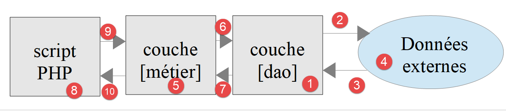

10. Applications en couches
10.1. Introduction
Les scripts de ce chapitre sont dans le dossier [scripts-console/troiscouches] :
Nous allons découvrir maintenant comment structurer une application PHP en couches :

Dans ce schéma, c'est la couche de gauche qui prend l'initiative d'utiliser la couche de droite. Le rôle des couches est le suivant :
- [1] : la couche appelée [dao] (Data Access Objects) s'occupe des échanges avec des entrepôts de données externes [4] (fichiers, bases de données, services web…). Cette couche est parfois appelée [DAL] (Data Access Layer), un terme qui décrit mieux son rôle. Cette couche peut lire des données [3] ou en écrire [2]. Elle est sollicitée par la couche [métier] [6] et lui rend des résultats [7] ;
- [5] : une couche appelée [métier] qui rassemble des procédures « métier » à qui on fournit toutes les données dont elles ont besoin. C'est généralement la couche la plus stable d'un projet car elle ne dépend pas de la façon dont les données sont acquises. Celles-ci ont deux sources :
- [9] : les données fournies par le script PHP ;
- [6, 7] : les données demandées à la couche [dao] ;
- [8] : le script principal est le chef d'orchestre. Dans une application console, il va :
- créer les couches [métier] et [dao] ;
- dérouler l'algorithme de l'application. Cet algorithme est celui d'un chef d'orchestre : on n'y trouve aucun code « métier » ou d'accès aux données. Le script principal se contente d'appeler les procédures de la couche [métier] [9]. Il ignore totalement la couche [dao] et les données externes. Il peut fournir à la couche [métier] des données [9]. Dans une application console, celles-ci peuvent provenir de fichiers de configuration ou de l'utilisateur du script. Il reçoit des résultats [10] de la couche [métier]. Il peut avoir besoin de stocker certains résultats : pour cela il utilise de nouveau les procédures de la couche [métier] qui, elles, vont s'adresser à la couche [dao] qui fera le travail ;
- parmi les résultats, le script principal peut recevoir des exceptions. C'est son rôle de gérer les exceptions qui remontent de toutes les couches .
Ce découpage en couches est destiné à faciliter l'évolution de l'application. Pour cela, chaque couche implémente une interface. Supposons que :
- la couche [dao] est implémentée par une classe [Dao] qui implémente une interface [IDao] ;
- la couche [métier] est implémentée par une classe [Metier] qui implémente une interface [IMetier] .
Les procédures de la couche [métier] vont alors utiliser l'interface [IDao] plutôt que la classe [Dao]. Ceci permet de faire évoluer la couche [dao] sans toucher à la couche [métier]. Supposons que dans une version 1, la couche [Dao1] utilise des données d'une base de données. Suite à une évolution, ces données sont maintenant fournies par un service web dans une version 2, [Dao2]. On s'assurera que les deux classes [Dao1] et [Dao2] implémentent la même interface [IDao] et qu'elles lancent les mêmes exceptions. Si ceci est vérifié, la couche [Metier] qui travaille avec l'interface [IDao] restera inchangée.
Le même raisonnement s'applique à la couche [métier].
L'application va implémenter la structure en couches suivante :

10.2. Objets échangés entre couches
En temps normal, les couches échangent divers objets. Ici elles échangeront des objets de la classe [Personne] suivante [Personne.php] :
Commentaires
- ligne 6 : les objets échangés entre couches ne contiennent que des données. On en fait des objets immuables (classe [readonly]) : une couche ne peut ainsi modifier par inadvertance un objet qu'elle a reçu d'une autre couche ;
- ligne 9 : la personne n'a qu'un attribut, son identifiant [$id], initialisé par le constructeur grâce à la promotion des paramètres. On va supposer que cet identifiant désigne une personne unique dans un entrepôt de données ;
- lignes 14-17 : la méthode [__toString] qui affiche l'identifiant de la personne .
10.3. Couche [dao]
L'interface [IDao] implémentée par la couche [dao] est la suivante [IDao.php] :
Cette interface est implémentée par la classe [Dao1] suivante [Dao1.php] :
Commentaires
- ligne 5 : la classe [Dao1] implémente l'interface [IDao]. Elle est déclarée [final] : elle n'est pas destinée à être dérivée ;
- la classe n'interagit pas avec un entrepôt de données. On se contente d'afficher des messages pour suivre le déroulement du code (ligne 11, ligne 18) ;
- ligne 8 : l'attribut [#[\Override]] indique que la méthode implémente une méthode de l'interface. Si l'on se trompe dans son nom, PHP le signale ;
- ligne 19 : on rend bien une personne ayant l'identifiant passé en paramètre à la méthode .
Nous implémentons également l'interface [IDao] avec la classe [Dao2] suivante [Dao2.php] :
La classe [Dao2] est similaire à la classe [Dao1] si ce n'est que nous avons modifié les messages affichés.
10.4. Couche [métier]
La couche [métier] offre l'interface [IMetier] suivante [IMetier.php] :
Commentaires
- ligne 6 : l'interface [IMetier] étend l'interface [IDao]. Ce n'est pas du tout obligatoire. On le fait ici parce que l'exemple est simple : la couche [métier] offre au script principal les méthodes [get] et [save] de la couche [dao], qu'elle lui cache ;
- ligne 9 : la méthode [doSomething] est propre à la couche [métier] .
Le cours PHP 7 nommait l'interface [IMétier] et la classe [Métier], avec un accent. PHP accepte les lettres accentuées dans les identificateurs, mais un fichier nommé [Métier.php] pose des problèmes avec certains outils (archives zip, systèmes de fichiers, chargement automatique des classes). Nous nous en tenons désormais à des noms de classes et de fichiers sans accent.
L'interface [IMetier] est implémentée par la classe [Metier] suivante [Metier.php] :
Commentaires
- ligne 8 : la couche [métier] doit avoir une référence sur la couche [dao] pour pouvoir utiliser les méthodes de celle-ci. Cette référence lui est passée par son constructeur et mémorisée dans l'attribut privé en lecture seule [$dao] (promotion des paramètres). On notera que le type du paramètre est l'interface [IDao]. Ainsi la couche [métier] va être capable de travailler avec toute classe implémentant l'interface [IDao]. Si on passe d'une couche [Dao1] à une couche [Dao2] et que toutes deux implémentent l'interface [IDao], la couche [métier] n'a pas à être réécrite ;
- cette technique s'appelle l'injection de dépendances par le constructeur : la classe [Metier] ne crée pas elle-même la couche [dao] dont elle dépend, on la lui fournit. Le cours PHP 7 utilisait un setter [setDao]. L'injection par le constructeur est aujourd'hui la règle : un objet [Metier] ne peut exister sans sa couche [dao], et celle-ci ne peut plus être changée ensuite (attribut [readonly]). C'est aussi ce que pratiquent les frameworks PHP comme Symfony ou Laravel ;
- lignes 14-18 : implémentation de [IMetier::doSomething] ;
- lignes 22-27 : implémentation de [IMetier::save]. Cette méthode doit sauvegarder une personne dans un entrepôt de données. La couche [métier] ne sait pas faire ça. Elle s'adresse à la couche [dao] pour faire cette sauvegarde (ligne 26) ;
- lignes 31-36 : implémentation de [IMetier::get]. Cette méthode doit récupérer dans un entrepôt de données la personne dont l'identifiant lui est passé en paramètre. La couche [métier] ne sait pas faire ça. Elle s'adresse à la couche [dao] pour faire le travail (ligne 35) .
Conclusion : dès que la couche [métier] a besoin d'accéder aux données stockées dans l'entrepôt de données, elle doit passer par la couche [dao] qui a été créée pour accéder à ces données.
10.5. Script principal
Nous allons écrire deux scripts chefs d'orchestre pour cette application. Le 1er [main1.php] utilisera la couche [Dao1] alors que le second [main2.php] utilisera la couche [Dao2]. Nous voulons montrer que cela n'a aucune incidence sur le code de la couche [Metier].
Le script [main1.php] est le suivant :
Commentaires
- le script [main1.php] est le chef d'orchestre de l'application. Il charge les fichiers des classes et interfaces (lignes 7-11), crée la structure en couches de l'application (ligne 14) puis dialogue avec la couche [métier] (lignes 16-18) ;
- ligne 14 : c'est ici, et seulement ici, que l'on choisit l'implémentation de la couche [dao] ;
- selon le schéma de la structure en couches, le script [main1.php] ne doit s'adresser qu'à la couche [métier]. Il ne doit pas s'adresser à la couche [dao] même si c'est théoriquement possible .
Les résultats de l'exécution sont les suivants :
Commentaires
- la ligne 16 du code a provoqué l'écriture des lignes 2 et 3 des résultats ;
- la ligne 17 du code a provoqué l'écriture de la ligne 4 des résultats ;
- la ligne 18 du code a provoqué l'écriture des lignes 5 et 6 des résultats .
Le script [main2.php] est le suivant :
Commentaires
- ligne 10 et ligne 14 : la structure en couches utilise désormais la couche [Dao2]. Ce sont les seules différences avec [main1.php] .
Les résultats de l'exécution sont les suivants :
La couche [Dao1] simule un accès à une base de données locale alors que la couche [Dao2] simule un accès à une base de données distante. Tant que ces deux couches respectent l'interface [IDao], on voit que le code de la couche [Metier] n'a pas eu à être changé.
Nous allons appliquer ce que nous venons d'apprendre à l'exercice du calcul de l'impôt qui nous sert de fil rouge.